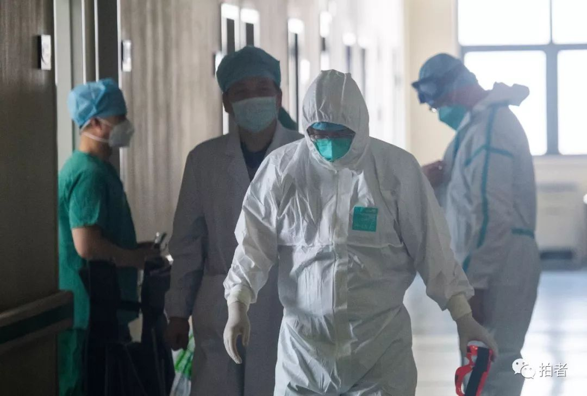
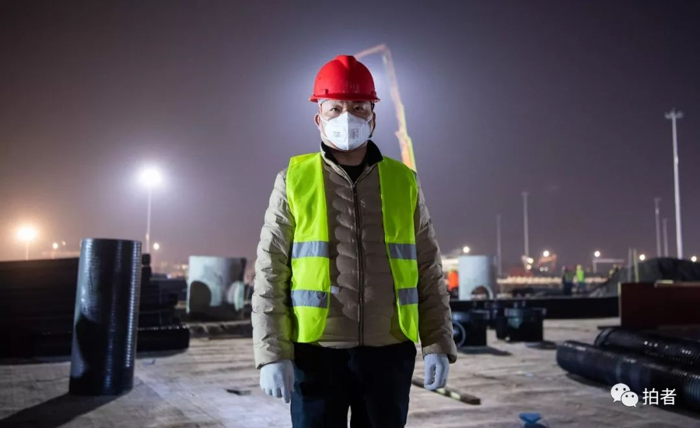
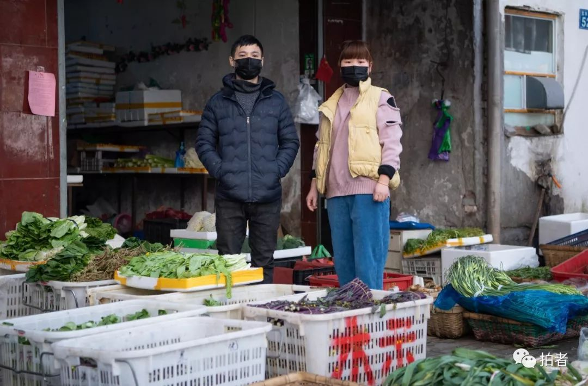

在人间丨疫情中一夜长大的少年
原文链接 备份链接 凤凰新闻客户端 凤凰网在人间工作室出品 对于刚刚年满十八岁的少年小雨来说，2020年1月25日，大年初一晚上，是他生命中迄今最漫长的一夜。 武汉下着雨。第一人民医院发热门诊急救室外的走廊上，小雨和母亲相偎在没有温度的椅 …

他们是这座城市庞大而病弱的躯体上，渺小的个体，但正是因为他们的存在，才让这座骤然减速的庞大城市，能够尽量维持着运转。
全文1402字，阅读约需3分钟

▲1月28日13时7分，武汉汉口火车站，平时周边车水马龙，现在难见一辆车。
九省通衢的繁华都市，如今陷入了冰火两重天的僵持：一边是救人如救火的紧急，医院排长队，医生连轴转；一边则是空旷的马路和暗下去的万家灯火。

▲ 1月29日，武汉汉口沿江大道，由于公共交通停运，一名女子边骑车边拖着箱子前行。

▲1月29日，武汉汉口，正在营业的烧烤店。
但总有一些人，出现在空空荡荡的大街上。他们是这座城市庞大而病弱的躯体上，渺小的个体，但正是因为他们的存在，才让这座骤然减速的庞大城市，能够尽量维持着运转。

▲1月28日，蔡甸区，来自随州的包言保今年春节和妻子留守武汉，与孩子分隔两地。空荡荡的街道上，他照常执行清扫任务。
▲1月31日，火神山医院建筑工地附近，警察24小时轮班，对工程车辆进行通行管理，确保道路畅通。中午，一名女辅警站在路边解决午饭。

▲1月30日，武汉协和医院西院12层隔离病房清洁区内，换好装备的北京赴鄂援助医疗队队员。
1月29日，45岁的胡先生在武汉雷神山医院工地现场又度过了一晚。他的亲属是医生，此时还战斗在抗疫一线。而他则从医院开工那日开始，就出现在这里，见证着、参与着这所“受命于危难之中”的医院拔地而起。

▲1月29日，雷神山医院建筑工地，45岁的胡先生通宵值守在现场。据了解，胡先生的亲属也在医院坚守岗位。
原本想回家的魏先生一家，最终决定留在这座奋斗了十年的城市，并且从大年初一就打开店铺售卖新鲜蔬菜，让社区多了一分平日里常常被忽略的人间烟火气。

▲1月31日，硚口区宝丰二路，来武汉10年的魏先生一家回老家的计划搁浅后，大年初一就打开店铺在社区售卖新鲜蔬菜。
在江岸区，40岁的货车司机肖昌文大年三十也没休息，他接到征求志愿者的通知后，就在群内组织货车司机们，自发地将物流点的物资送往各个医院。

▲1月31日，40岁的肖昌文是一名货车司机，大年三十接到征求志愿者的通知后，便组织货车司机进行调配和运输，将物资送往各个医院。
而另一位公交车驾驶员袁建河则在线路停运之后，为北京医疗队员提供摆渡车服务，往返驻地和武汉协和医院西院病区，从白天一直摆渡到深夜。

▲2月1日凌晨，本该停驶的40岁公交车驾驶员袁建河为北京医疗队员提供摆渡车服务。每天往返于驻地和武汉协和医院西院病区。
他们是这个城市默默的守护者。像他们一样的平凡市民还有很多。

▲2月1日，蔡甸区，19岁的张先生来自荆州，便利店夜间鲜有人光顾，但因为这是距工地最近并还开门的便利店，他并没有松懈。
▲1月31日，硚口区，宝丰街道宝地社区协管员张静正在为社区居民测量体温。除为居民测量体温，社区工作人员还要为公共区域消毒。
▲1月31日，江岸区同兴社区，为社区老人和非发热病人提供服务的出租车司机互相帮助穿上防护服。
城市和它的人民在静默中等待疫情拐点的来临，在此之前，等待将是漫长的、惶恐的，但微小的守护汇聚在一起，就成了点燃希望的烛火，维护着这座江城的活力，等待着江河血脉重新沸腾的那一天。
▲1月31日，京东物流宝丰配送站，42岁的尚黎明在管理站点的同时，兼顾搬运和运送医疗物资到医院的任务，每天工作超12小时。
*文/新京报记者 许星星 图编 刘晶 陈婉婷 责校 柳宝庆*
点击下图进入”全国新型冠状病毒感染肺炎实时地图“

*值班编辑 吾彦祖 *


本文部分内容首发自新京报公号“拍者”
未经新京报书面授权不得转载使用
欢迎朋友圈分享

原文链接 备份链接 凤凰新闻客户端 凤凰网在人间工作室出品 对于刚刚年满十八岁的少年小雨来说，2020年1月25日，大年初一晚上，是他生命中迄今最漫长的一夜。 武汉下着雨。第一人民医院发热门诊急救室外的走廊上，小雨和母亲相偎在没有温度的椅 …
原文链接 备份链接 截至1月28日，国家卫健委称，已向湖北派出近6000人的医疗队，支援湖北的疫情防治工作。全国各地医护人员和物资救济，正在缓慢改变武汉的应对现状。武汉也在不断总结和调整应对举措。随着各地输入病例不断增多，武汉防疫中的操作 …
原文链接 备份链接 *************▲************* 1月30日，医护人员在工作间隙为自己鼓劲打气。 （新华社 陈晨/图） 全文共*3942*字，阅读大约需要9分钟。 据我所知，有的社区医院医生已经被打了，这让我 …
原文链接 备份链接 数据来源：腾讯新冠肺炎疫情实时追踪 近日，武汉红十字会的热搜稳升不降， 缘起于接受全国3.4亿捐赠，却仅调拨2000万的数据； 昨日，湖北省红十字会成为众矢之的， 物资调配、透明度均大受质疑， 其回应也漏洞百出。 据 …
原文链接 备份链接 和老高一样，我们都等待着这一天，作为一名在武汉打拼的普通市民，我爱这座城市，希望武汉好起来，希望我的故事能带给你们力量。 口述 | 陈 璇 整理 | 竹 里 我叫陈璇，今年48岁，湖北咸宁市嘉鱼县人，2013年，我和老 …